건축기사 (2008-09-07 기출문제)
1과목: 건축계획
1. 도서관 출납시스템의 유형 중 열람자 자신이 서가에서 책을 꺼내어 책을 고르고 그대로 검열을 받지 않고 열람하는 형식은?
- 자유 개가식
- 안전 개가식
- 반개가식
- 폐가식
(정답률: 85%)

2. 공장 건축계획에 관한 설명 중 옳지 않은 것은?
- 평면계획시 관리부분과 생산공정부분을 구분하고 동선이 혼란되지 않게 한다.
- 공장건축의 형식에서 집중식(Block Type)은 건축비가 저렴하고, 공간효율도 좋다.
- 공정중심의 레이아웃은 소종다량생산(小種多量生産)이나 표준화가 쉬운 경우에 적합하다.
- 공장 작업장의 지붕형식으로 균일한 조도를 얻기 위해 톱날지붕을 도입하는 경우가 있다.
(정답률: 64%)
3. 다음 중 병원건축에 있어서 단일 고층건물형식의 유리한점이 아닌 것은?
- 각 병실을 남향으로 할 수 있어 일조, 통풍조건이 좋아진다.
- 업무의 효율화가 가능하다.
- 낮은 건폐율로 주변 공지 확보에 유리하다.
- 병동의 관리가 용이하다.
(정답률: 54%)
4. 다음과 같은 특징을 갖는 미술관 전시실의 순회형식은?
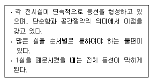
- 연속순로 형식
- 갤러리 형식
- 중앙홀 형식
- 코리더 형식
(정답률: 88%)
5. 사무소건축의 평면계획에 대한 설명 중 옳지 않는 것은?
- 단일지역배치는 자연채광이 잘 되고 경제성보다 건강, 분위기 등의 필요가 더 중요할 경우 적당하다.
- 단일, 2중 및 3중 지역배치는 여러 부분에 출입할 수 있는 복도를 갖는다.
- 3중 지역배치는 수직교통시설이 사무실 지역에 위치하게 되므로써 생겨났다.
- 2중 지역배치는 소규모 크기의 사무소 건물에 가장 적합한 방법이다.
(정답률: 49%)
6. 다음의 호텔건축에 대한 설명 중 옳지 않은 것은?
- 호텔의 공공부분은 호텔 전체의 매개공간 역할을 한다.
- 호텔의 관리부분에 의해 호텔의 외형이 결정된다.
- 호텔의 숙박부분은 호텔의 가장 중요한 부분으로 객실은 쾌적성과 개성을 필요로 한다.
- 호텔의 공공부분 중 수익성 부분은 일반적으로 1층과 지하층에 두는 경우가 많다.
(정답률: 75%)
7. 다음 중 익공식(翼工式) 건물은?
- 강릉 오죽헌
- 서울 동대문
- 봉정사 대웅전
- 무위사 극락전
(정답률: 71%)
8. 사무소 건축의 코어형식 중 구조코어로서 가장 바람직한 것은?
- 편코어형
- 외코어형
- 양측코어형
- 중심코어형
(정답률: 78%)
9. 다음의 르네상스 건축물에 대한 설명 중 옳지 않은 것은?
- 성 스피리토 성당의 형태는 인간중심적 세계관에서 신중심적 세계관으로 변화했음을 보인다.
- 루첼라이 궁전은 각 층마다 다른 오더를 사용하는 고대 로마 방식을 채택하였다.
- 브라만테가 설계한 성 베드로 성당의 주제는 중심성이다.
- 메디치-리카르디 궁전의 1층은 러스티케이션 처리를 하여 강인한 면을 강조하였다.
(정답률: 46%)
10. 주택의 주방 계획에서 작업과정에 합리적인 작업대 배열의 순서로 가장 적당한 것은?
- 냉장고→레인지→싱크→조리대
- 싱크→레인지→냉장고→조리대
- 레인지→냉장고→조리대→싱크
- 냉장고→싱크→조리대→레인지
(정답률: 75%)
11. 다음의 주거건축의 세부계획에 대한 설명 중 옳지 않은 것은?
- 부엌의 평면형 중 ㄱ자형은 작업동선이 효율적이지만 여유공간이 없어 식사실과 함께 구성할 수 없다.
- 현관의 크기는 주택의 규모와 가족의 수, 그리고 방문객의 예상수 등을 고려한 출입량에 중점을 두는 것이 타당하다.
- 소규모 주택에서는 복도가 없는 홀 형식의 평면계획으로 최대한의 공간활용을 하는 것이 좋다.
- 욕실계획은 제한된 작은 공간에서 편리하게 제기능을 수행하면서 되도록 넓게 사용하는 공간 사용의 극대화 방안이 요구된다.
(정답률: 68%)
12. 종합병원계획에 대한 설명 중 옳지 않은 것은?
- 전체적으로 바닥의 단차이를 가능한 줄이는 것이 좋다.
- 수술부는 타 부분의 통과교통이 없는 장소에 배치한다.
- 일반적으로 병동부가 차지하는 면적은 병원 전체에서 25~35% 정도이다.
- 외래진료부의 구성단위는 간호단위를 기본 단위로 한다.
(정답률: 61%)
13. 사무소 건축에 대한 설명 중 옳지 않은 것은?
- 오피스 랜드스케이핑은 개방식 배치의 한 형식이다.
- 아트리움은 공간적으로는 중간영역으로서 매개와 결절점의 기능을 수용한다.
- 수용인원수에 의한 면적 산출시 기준이 되는 1인당 소요바닥면적은 8~11m2 정도이다.
- 층고는 기준층에서는 330~400cm 정도로 하고최상층에서는 기준층보다 30cm 정도 작게 한다.
(정답률: 57%)
14. 다음 중 방위에 따른 주택의 실배치가 가장 부적당한 것은?
- 남 - 식당, 아동실, 가족거실
- 서 - 부엌, 화장실, 가사실
- 북 - 냉장고, 저장실, 아틀리에
- 동 - 침실, 식당
(정답률: 73%)
15. 다음의 은행 건축에 대한 설명 중 옳지 않은 것은?
- 은행의 주체는 은행실 (영업실+손님대기실)이므로, 전면도로의 보행인 동선을 고려하여 주 현관의 위치를 결정한다.
- 각 실의 배치는 은행실을 중심으로 계획하고, 고객의 동선과 행원의 동선이 교차되지 않도록 유의한다.
- 겨울철 기온이 낮은 우리나라에서는 열보호를 위해 현관에 전실을 두지 않는 것이 좋다.
- 일반적으로 현관 출입문은 도난방지상 안여닫이로 하는 것이 타당하다.
(정답률: 70%)
16. 학교건축에 요구되는 융통성과 가장 거리가 먼 것은?
- 한계 이상의 학생수의 증가에 대응하는 융통성
- 지역사회의 이용에 의한 융통성
- 광범위한 교과내용에 변화에 대응하는 융통성
- 학교운영방식의 변화에 대응하는 융통성
(정답률: 59%)
17. 극장건축의 관련 제실에 대한 설명 중 옳지 않은 것은?
- 앤티 룸(anti room)은 출연자들이 출연 바로 직전에 기다리는 공간이다.
- 의상실은 실의 크기가 1인당 최소 8~9m이 필요하며, 그린 룸이 있는 경우 무대와 동일한 층에 배치하여야 한다.
- 배경제작실의 위치는 무대에 가까울수록 편리하며, 제작 중의 소음을 고려하여 차음설비가 요구된다.
- 그린 룸(green room)은 출연자 대기실을 말하며 주로 무대 가까운 곳에 배치한다.
(정답률: 68%)
18. 다음의 극장계획에 대한 설명 중 ( ) 안에 알맞은 내용은?
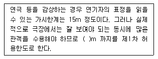
- 22
- 27
- 30
- 35
(정답률: 82%)
19. 다음 중 주택 거실에서 가구배치의 결정요소와 가장 거리가 먼 것은?
- 거실의 형태
- 개구부의 위치
- 바닥재의 종류
- 거주자의 취향
(정답률: 75%)
20. 다음 중 서양건축의 변천과정으로 옳은 것은?
- 이집트→그리스→로마→비잔틴→로마네스크→고딕→르네상스→바로크
- 이집트→로마→그리스→로마네스크→비잔틴→고딕→르네상스→바로크
- 이집트→그리스→비잔틴→로마→고딕→로마네스크→바로크→르네상스
- 그리스→이집트→비잔틴→로마→로마네스크→고딕→르네상스→바로크
(정답률: 52%)
2과목: 건축시공
21. 한중콘크리트의 양생에 관한 다음 설명 중 옳지 않은 것은?
- 콘크리트 타설 후 압축강도가 5MPa이 될 동안에는 콘크리트의 어느 부분에서도 그 온도가 5℃이상으로 하여 초기양생을 실시한다.
- 단열 보온양생을 실시할 경우, 콘크리트가 국부적으로 냉각되지 않도록 한다.
- 콘크리트의 급속건조를 방지하기 위해 가열보온양생은 실시하지 않는다.
- 콘크리트의 노출면은 시트, 기타 적절한 재료로 틈새없이 덮어 양생을 계속한다.
(정답률: 64%)
22. 다음 중 돌라마이트 플라스터 바름에 대한 설명으로 옳지 않은 것은?
- 시멘트와 혼합한 정벌바름 반죽은 2시간 이상 경과한 것은 사용할 수 없다.
- 정벌바름용 반죽은 물과 혼합한 후 2시간 정도 지난 다음 사용하는 것이 바람직하다.
- 초벌바름에 갈램금이 없을 때에는 고름질하고나서 7일 이상 경과한 후 재벌바름한다.
- 재벌바름이 지나치게 건조한 때는 적당히 물을 뿌리고 정벌바름 한다.
(정답률: 53%)
23. 다음 중 병원 건축물 등에서 방사선 차폐용으로 사용되는 콘크리트는?
- 수밀 콘크리트
- 쇄석 콘크리트
- 한중 콘크리트
- 중량 콘크리트
(정답률: 57%)
24. 레미콘의 규격 [25-24-140]이 각각 의미하는 것은?
- 잔골재 최대치수-콘크리트 압축강도-슬럼프값
- 굵은골재 최대치수-콘크리트 압축강도-슬럼프값
- 잔골재 최대치수-슬럼프값-콘크리트 압축강도
- 굵은골재 최대치수-슬럼프값-콘크리트 압축강도
(정답률: 72%)
25. 얇은 시트로 이용되는 경우가 많으며 내화학성의 파이프 또는 건축용 성형폼으로도 쓰이는 열가소성 수지는?
- 폴리에틸렌 수지
- 아크릴 수지
- 멜라민 수지
- 페놀수지
(정답률: 66%)
26. 다음 중 네트워크 공정표에 사용되는 용어의 설명으로 옳지 않은 것은?
- Critical Path : 처음작업부터 마지막작업에 이르는 모든 경로 중에서 가장 긴 시간이 걸리는 경로
- Activity : 작업을 수행하는데 필요한 시간
- Float : 각 작업에 허용되는 시간적인 여우
- Event : 작업과 작업을 결합하는 점 및 프로젝트의 개시점 혹은 종료점
(정답률: 59%)
27. 웰 포인트 공법에 관한 다음 설명 중 옳지 않은 것은?
- 지하수 배수 공법의 일종이다.
- 지하수위를 저하시키는 공법이다.
- 지하수 저하에 따른 인접지반과 공동매설물 침하에 주의가 필요한 공법이다.
- 점토질의 투수성이 나쁜 지질에 적합하다.
(정답률: 73%)
28. 다음 중 건설공사의 입찰 순서로 옳은 것은?
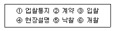
- ①-④-③-②-⑤-⑥
- ①-②-⑤-⑥-③-④
- ①-⑤-②-⑥-③-④
- ①-④-③-⑥-⑤-②
(정답률: 79%)
29. 다음 중 도장공사에 관한 주의사항으로 옳지 않은 것은?
- 바탕의 건조가 불충분하거나 공기의 습도가 높을 때에는 시공하지 않는다.
- 불투명한 도장일 때에는 초벌부터 정벌까지 같은 색으로 시공해야 한다.
- 야간에는 색을 잘못 도장할 염려가 있으므로 시공 하지 않는다.
- 직사광선은 가급적 피하고 도막이 손상될 우려가 있을 때에는 도장하지 않는다.
(정답률: 80%)
30. PERT-CPM 공정표 작성시에 EST와 EFT의 계산 방법 중 옳지 않은 것은?
- 작업의 흐름에 따라 전진 계산한다.
- 선행작업이 없는 첫 작업의 EST는 프로젝트의 개시시간과 동일하다.
- 어느 작업의 EFT는 그 작업의 EST에 소요일수를 더하여 구한다.
- 복수의 작업에 종속되는 작업의 EST는 선행작업 중 EFT의 최소값으로 한다.
(정답률: 70%)
31. 다음 중 사용할 때 마다 부재의 조립, 분해를 반복하지 않아 벽식구조인 아파트 건축물에 적용효과가 큰 대형 벽체 거푸집은?
- Gang form
- Sliding form
- Air tube form
- Traviling form
(정답률: 79%)
32. 부어넣을 콘크리트의 최고 높이가 40m, 타워에서 호퍼까지의 수평거리가 20m라면 타워의 산정 높이는?
- 50m
- 56m
- 62m
- 70m
(정답률: 35%)
33. 다음 중 철근의 가스압점에 관한 설명으로 옳지 않은 것은?
- 이음공법 중 접합강도가 극히 크고 성분원소의 조직변화가 적다.
- 가압 시의 압력은 철근의 축방향으로 30MPa 이상으로 한다.
- 가스압접할 부분은 직각으로 자르고 절단면을 깨끗하게 한다.
- 접합되는 철근의 항복점 또는 강도가 다른 경우에 주로 사용한다.
(정답률: 63%)
34. 커튼월의 Mock Up Test에 있어 기본성능시험의 항목에 해당되지 않는 것은?
- 정압수밀시험
- 구조시험
- 기밀시험
- 인장강도시험
(정답률: 60%)
35. 콘크리트공사에서 진동기의 효과가 가장 잘 발휘될 수 있는 콘크리트는?
- 부배합 저슬럼프
- 부배합 고슬럼프
- 빈배합 저슬럼프
- 빈배합 고슬럼프
(정답률: 59%)
36. 다음 중 콘크리트 강도에 있어 가장 큰 영향을 주는 요소는?
- 시멘트의 품질
- 물-시멘트 비
- 골재의 품질
- 슬럼프값
(정답률: 65%)
37. 낙관적 시간 a=4, 개연적 시간 m=7, 비관적 시간 b=8 이라고 할 때 PERT 기법에서 적용하는 예상 시간은 얼마인가? (단, 단위는 주)
- 5.8주
- 6.0주
- 6.3주
- 6.7주
(정답률: 52%)
38. 다음 중 칠공사에서의 철제계단(양면칠) 소요면적 계산으로 옳은 것은?
- 경사면적 × 1.5배
- 경사면적 × 2배
- 경사면적 × (2.5~3)배
- 경사면적 × (3~5)배
(정답률: 53%)
39. 굳지 않은 콘크리트의 성질에 관한 다음 설명 중 옳지 않은 것은?
- 피니셜빌리티(Finishability)란 굵은골재의 최대치수, 잔골재율, 골재의 입도, 반죽 질기 등에 따라 마무리 하기 쉬운 정도를 말한다.
- 단위수량이 많으면 컨시스턴시(Consistency)가 좋아 작업이 용이하고 재료 분리가 일어 나지 않는다.
- 블리딩(Bleeding)이란 콘크리트 타설 후 표면에 물이 모이게 되는 현상을 말한다.
- 워커빌리티(Workbility)란 작업의 난이도 및 재료의 분리에 저항하는 정도를 나타내며 골재의 입도와도 밀접한 관계가 있다.
(정답률: 55%)
40. 다음 중 기준점(bench mark)에 관한 설명으로 옳지 않은 것은?
- 신축할 건축물의 높이의 기준을 삼고자 설정하는 것으로 대개 발주자, 설계자 입회하에 결정된다.
- 바라보기 좋고 공사에 지장이 없는 1개소에 설치한다.
- 부동의 인접도로 경계석이나 인근 건물의 벽또는 담장을 이용한다.
- 공사가 완료된 뒤라도 건축물의 침하, 경사 등을 확인하기 위하여 사용되는 경우가 있다.
(정답률: 71%)
3과목: 건축구조
41. 다음 중 압축재의 좌굴하중 산정시 직접적인 관계가 없는 것은?
- 단면2차모멘트
- 탄성계수
- 푸아송비
- 지지조건
(정답률: 55%)
42. 강도설계법에서 인장을 받는 이형철근의 정착길이 ld의 최소값은?
- 150mm
- 200mm
- 250mm
- 300mm
(정답률: 48%)
43. 그림과 같이 양단이 고정된 강재 부재의 온도가 △T=30℃ 증가될 때 이 부재에 걸리는 압축응력은 얼마인가? (단, 강재의 탄성계수 Es=2.0×105MPa, 부재단면적 A= 5000mm2, 열팽창 계수α=1.2×10-5/℃ 이다.)
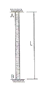
- 36MPa
- 54MPa
- 72MPa
- 90MPa
(정답률: 49%)
44. F10T=M20 고력볼트의 1면 허용전단력은 47.1kN이고, 설계볼트장력은 165kN이다. 전단력과 함께 55kN의 인장력이 작용할 때, 이 고력볼트의 허용 전단력은?
- 31.4kN
- 34.5kN
- 37.7kN
- 39.5kN
(정답률: 23%)
45. 강도설계법에서 보를 설계할 때 인장철근비가 균형철근비보다 작게 작용하는 이유로 가장 옳은 것은?
- 균열 단면의 휨강도를 높이기 위해
- 철근의 배치가 쉽고 시공이 용이하므로
- 처짐을 감소시키기 위해서
- 압축콘크리트의 취성파괴를 막기 위해서
(정답률: 62%)
46. 강도설계법 적용시 그림과 같은 단근 직사각형보의 최소 철근량은? (단, fck=21MPa, fy=400MPa)
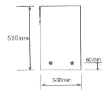
- 354mm2
- 462mm2
- 588mm2
- 643mm2
(정답률: 42%)
47. 그림과 같은 3회전단 구조물의 반력은?
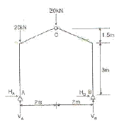
- HA=4.44kN, VA=30kN, HB=-4.44kN, VB=10kN
- HA=0kN, VA=30kN, HB=0kN, VB=10kN
- HA=-4.44kN, VA=30kN, HB=4.44kN. VB=10kN
- HA=4.44kN, VA=50kN, HB=-4.44kN, VB=-10kN
(정답률: 30%)
48. 다음 그림에서 보의 높이 h를 계산하여 지점단면상에 생기는 최대전단응력도를 구하면? (단, 허용휨응력도 fb=9MPa)
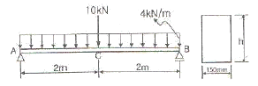
- 0.26MPa
- 0.36MPa
- 0.46MPa
- 0.56MPa
(정답률: 25%)
49. 그림과 같은 트러스의 C부재의 부재력은? (단, +: 인장, -: 압축)
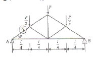
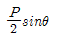
- Psecθ
- -Pcosecθ
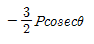
(정답률: 32%)
50. 볼트의 기계적 등급을 나타내기 위해 표시하는 F8T, F10T, F11T에서 가운데 숫자는 무엇을 의 미하는가?
- 휨강도
- 인장강도
- 압축강도
- 전단강도
(정답률: 70%)
51. 플랫 플레이트 슬래브(flat plate slab)가 큰 하중을 받을때 기둥주변에서는 뚤림전단(punching shear)의 위험이 생기는데 이 뚫림전단을 검토하는 위치로서 가장 적절한 것은? (단, d는 슬래브의 유효두께이다.)
- 기둥면에서 d/4만큼 떨어진 슬래브에 수직한 면
- 기둥면에서 d/2만큼 떨어진 슬래브에 수직한 면
- 기둥면에서 3/4d만큼 떨어진 슬래브에 수직한 면
- 기둥면에서 d만큼 떨어진 슬래브에 수직한 면
(정답률: 65%)
52. 다음 중 내진등급 ‘특’ 등급에 해당되는 건물에 관한 설명으로 옳지 않은 것은?
- 지진 후 피해복구에 필요한 중요시설을 갖추고 있거나 유해 물질을 다량 저장하고 있는 구조물을 말한다.
- 15층이상 아파트 및 오피스텔은 ‘특’등급에 속한다.
- 내진등급 ‘특’ 등급 건물은 모두 내진설계범주D에 해당한다.
- 도시계획구역인 경우 중요도 계수는 1.5를 사용한다.
(정답률: 36%)
53. 다음 중 철골구조의 소성설계와 관계 없는 것은?
- 형상계수(form facor)
- 소성힌지(plastic hinge)
- 붕괴기구(collapse mechanism)
- 전단중심(shear center)
(정답률: 48%)
54. 강도설계법에서 양단 연속 1방향 슬래브의 스팬이 300cm일때 처짐을 계산하지 않는 경우 슬래브의 최소 두께로 옳은 것은? (단, 단위체적질량 wc=2,300kg/m3의 일반콘크리트 및 항복강도 fy=400MPa 철근 사용)
- 11mm
- 13mm
- 15mm
- 20mm
(정답률: 28%)
55. 그림과 같은 구조물의 각 부재에 대한 분할 모멘트 MOA, MOB, MOC, MOD를 옳게 구한 것은?
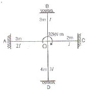
- MOA=4.74kN ‧ m, MOB=2.37kN ‧ m, MOC=3.55kN ‧ m, MOD=5.34kN ‧ m
- MOA=4.74kN ‧ m, MOB=2.37Kn ‧ m, MOC=3.91kN ‧ m, MOD=4.74kN ‧ m
- MOA=9.48kN ‧ m, MOB=4.74kN ‧ m, MOC=7.11kN ‧ m, MOD=10.67kN ‧ m
- MOA=9.48kN ‧ m, MOB=4.74kN ‧ m, MOC=7.82kN ‧ m, MOD=9.96kN ‧ m
(정답률: 50%)
56. 신축건물의 기초파기 중 토질에 생기는 현상과 가장 관계가 적은 것은?
- 보일링(boiling)
- 히이빙(heaving)
- 파이핑(piping)
- 언더피닝(under-pinning)
(정답률: 74%)
57. 강재 SM 490A에 대한 설명 중 옳지 않은 것은?
- SM은 용접구조용 강재임을 의미한다.
- 기호의 끝 알파벳은 충격흡수 에너지 시험 보증값에 따라 규정된다.
- 기호의 알파벳은 A ㆍ B ㆍ C의 순으로 용접성이 양호함을 의미한다.
- 최저 항복강도가 490N/mm2임을 나타낸다.
(정답률: 43%)
58. 초고층건물의 구조형식 중 건물의 외곽 기둥을 밀실하게 배치하고 일체화하여 초고층 건물을 계획하는 구조형식은?
- 메가칼럼 구조
- 대각가새 구조
- 전단벽 구조
- 튜브 구조
(정답률: 56%)
59. 강도설계법에서 휨 또는 휨과 축력을 동시에 받는 부재의 콘크리트 압축연단에서 극한변형률은 얼마로 가정하는가?
- 0.002
- 0.003
- 0.0⑤
- 0.007
(정답률: 60%)
60. 다음 그림과 같은 구조물의 판별로 옳은 것은?
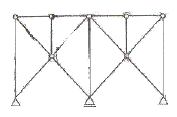
- 불안정
- 정정
- 1차부정정
- 2차부정정
(정답률: 54%)
4과목: 건축설비
61. 주위온도가 일정한 온도 이상이 되면 동작하도록된 열감지기는?
- 정온식
- 차동식
- 이온화식
- 광전식
(정답률: 75%)
62. 유압식 엘리베이터에 대한 설명 중 옳지 않은 것은?
- 오버헤드가 작다.
- 기계실의 위치가 자유롭다.
- 큰 적재량으로 승강행정이 짧은 경우에는 적용 할 수 없다.
- 지하주차장 엘리베이터와 같이 지하층에만 운전하는 경우 적용할 수 있다.
(정답률: 55%)
63. 공기조화방식 중 단일덕트방식에 대한 설명으로 옳지 않은 것은?
- 냉ㆍ 온풍의 혼합손실이 없다.
- 2중덕트방식에 비해 덕트 스페이스가 적게 든다.
- 각 실이나 존의 부하변동에 즉시 대응할 수 있다.
- 부하특성이 다른 여러 개의 실이나 존이 있는 건물에 적용하기가 곤란하다.
(정답률: 56%)
64. 다음과 같은 특징을 갖는 전동기는?
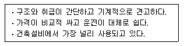
- 정류자전동기
- 유도전동기
- 동기전동기
- 직류전동기
(정답률: 68%)
65. 천장면에 작은 구멍을 많이 뚫어 그 속에 여러 형태의 하면개방형, 하면루버형, 하면확산형, 반사형 전구 등의 등기구를 매입하는 건축화 조명 방식은?
- 다운라이트 조명
- 루버 천장 조명
- 밸런스 조명
- 코브 조명
(정답률: 46%)
66. 다음의 설명에 알맞은 보일러의 출력은?
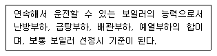
- 과부하출력
- 상용출력
- 정격출력
- 정미출력
(정답률: 52%)
67. 다음 중 변전실의 위치 결정시 고려할 사항과 가장 거리가 먼 것은?
- 발전기실, 축전시실과 인접한 장소일 것
- 습기나 먼지, 염해, 유독가스의 발생이 적은 장소일 것
- 외부로부터 전원의 인입이 편리하고 기기를 반입, 반출하는데 지장이 없을 것
- 빌딩의 변전실은 지하 최저층에 위치시키고, 천장높이는 2.7m 이상으로 할 것
(정답률: 74%)
68. 배관의 보온재에 대한 설명 중 옳지 않은 것은?
- 규조토는 다른 보온재에 비해 단열 효과가 우수하므로 두껍게 시공할 필요가 없다는 장점이 있다..
- 무기질 보온재는 일반적으로 높은 온도에서 사용할 수 있으며 유기질은 비교적 낮은 온도에 서 사용한다.
- 코르크는 재질이 어렵고 굽힘성이 없어 곡면에 사용하면 균열이 생기기 쉽다.
- 기포성 수지는 일반적으로 열전도율이 낮고 가볍다.
(정답률: 38%)
69. 샤워기 5개가 설치도어 있는 급수배관의 주 배관경은 얼마인가? (단, 샤워기의 접속배관경은 20mm, 동시사용률은 70%임)
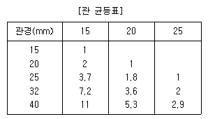
- 20mm
- 25mm
- 32mm
- 40mm
(정답률: 50%)
70. 빙축열 시스템에 대한 설명 중 옳지 않은 것은?
- 냉동기와 관련기기의 용량을 작게 할 수 있다.
- 유지보수가 용이하고 빙열 손실이 발생이 없다.
- 하절기 피크 전력부하가 감소하여 전기요금이 절감된다.
- 심야의 값싼 전략을 사용하므로 일반 냉동 시스템보다 운전비용이 줄어든다.
(정답률: 51%)
71. 어떤 상태의 공기를 절대습도의 변화없이 건구온도만 상승시킬 때, 그 공기의 상태변화를 나타낸 다음 내용 중 옳은 것은?
- 엔탈피는 증가한다
- 상대습도는 증가한다
- 노점온도는 감소한다
- 비체적은 감소한다.
(정답률: 70%)
72. 다음과 같은 특징을 갖는 배선 방법은?
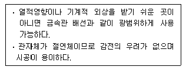
- 금속덕트 배선
- 합성수지관 배선
- 버스덕트 배선
- 플로어덕트 배선
(정답률: 66%)
73. 다음의 직류 엘리베이터에 대한 설명 중 옳은 것은?(오류 신고가 접수된 문제입니다. 반드시 정답과 해설을 확인하시기 바랍니다.)
- 속도조정이 자유롭다.
- 부하에 의한 속도변동이 없다.
- 교류 엘리베이터에 비해 착상오차가 적다.
- 속도 60m/min, 하중 1,000kg 이하에 적당하다.
(정답률: 38%)
74. 구경 100mm의 관내를 유속 2.0m/s로 물이 흐르고 있을 때 관길이 1m당 마찰저항손실수두는 얼마인가? (단, 관마찰계수는 0.03으로 한다.)
- 0.041 mAq
- 0.061 mAq
- 0.081 mAq
- 0.101 mAq
(정답률: 49%)
75. 증기난방에 대한 설명 중 옳지 않은 것은?
- 예열시간이 길고, 간헐 운전에 사용할 수 없다.
- 온수난방에 비하여 배관경이나 방열기가 작아진다.
- 스팀 해머를 발생할 수 있다.
- 증기의 유량 제어가 어려우므로 실온 조절이 곤란하다.
(정답률: 66%)
76. 게이트 밸브라고도 하며 유체의 흐름을 단속하는 대표적인 밸브로서 밸브를 완전히 열면 유체 흐름의 단면적 변화가 없어서 마찰저항이 거의 발생하지 않는 것은?
- 슬루스 밸브
- 글로브 밸브
- 체크 밸브
- 볼 밸브
(정답률: 28%)
77. 급수방식 중 펌프직송 방식에 대한 설명으로 옳지 않은 것은?
- 변속펌프로서 적절한 대수분할, 말단압력 제어등에 의해 에너지 절약을 꾀할 수 있다.
- 변속펌프 방식에서는 비교적 압력변동이 적다.
- 자동제어에 필요한 설비비가 적고, 유지관리가 간단하다.
- 상향공급방식이 일반적이다.
(정답률: 57%)
78. 온수난방에 사용되는 팽창탱크의 기능에 대한 설명 중 옳지 않은 것은?
- 밀폐식 팽창탱크에 있어서는 장치내의 주된 공기배출구로 이용되고, 온수보일러의 통기관으로도 이용된다.
- 운전 중 장치내의 온도상승으로 생기는 물의 체적팽창과 그의 압력을 흡수한다.
- 운전 중 장치내를 소정의 압력으로 유지하고, 온수온도를 유지한다.
- 팽창된 물의 배출을 방지하여 장치의 열손실을 방지한다.
(정답률: 44%)
79. 냉방부하 중 현열부하로만 작용하는 것은?
- 인체부하
- 조명기구부하
- 틈새바람에 의한 부하
- 환기부하
(정답률: 60%)
80. 양수량 10m3/min, 전양정 10m, 펌프의 효율 η=80% 일 때 펌프의 소요 동력은 얼마인가? (단, 물의 밀도는 1000kg/m3, 여유율은 10%로 한다.)
- 22.5kw
- 26.5kw
- 30.6kw
- 32.4kw
(정답률: 44%)
5과목: 건축법규
81. 토지이용을 합리화 ㆍ 구체화하고, 도시 또는 농 ㆍ 산 ㆍ 어촌의 기능의 증진, 미관의 개선 및 양호한 환경을 확보하기 위하여 수립하는 계획으로 정의되는 것은?
- 제1종 지구단위계획
- 제2종지구단위계획
- 광역도시계획
- 도시기본계획
(정답률: 30%)
82. 공작물을 축조(건축물과 분리하여 축조하는 것을 말한다)하고자 하는 경우 시장 ㆍ 군수 ㆍ 구청장에게 신고를 하여야 하는 대상 공작물이 아닌 것은?
- 높이 7m의 굴뚝
- 높이 7m의 기념탑
- 높이 5m의 광고탑
- 높이 7m의 고가수조
(정답률: 57%)
83. 건축법에 따르면 공사감리자는 공사의 공정이 대통령령으로 정하는 진도에 다다른 때에는 감리중간보고서를 작성하여 건축주에게 제출하여야 하는데, 다음 중 대통령령으로 정하는 진도에 다다른 때에 해당하지 않는 것은?
- 당해 건축물의 구조가 철근콘크리트조인 경우 기초공사시 철근배치를 완료한 때
- 당해 건축물의 구조가 철골조인 경우 기초공사에 있어 주춧돌의 설치를 완료한 때
- 당해 건축물의 구조가 철골철근콘크리트조인 경우 지붕슬래브 배근을 완료한 때
- 당해 건축물의 구조가 철근콘크리트조이며 5층이상 건축물인 경우 지상 5개층 마다 상부 슬래브배근을 완료 할때
(정답률: 60%)
84. 다음 중 용도별 건축물의 종류가 옳지 않은 것은?
- 공동주택- 기숙사
- 의료시설- 한방병원
- 자동차 관련시설- 주유소
- 관광휴게시설- 야외음악당
(정답률: 62%)
85. 다음의 기계식주차장치의 안전기준에 관한 내용중 ( ) 안에 공통으로 들어갈 치수는?
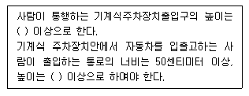
- 1.5 미터
- 1.8 미터
- 2.1 미터
- 2.3 미터
(정답률: 23%)
86. 다음 주 주요구조부를 내화구조로 하여야 하는 대상 건축물에 속하지 않는 것은?
- 문화 및 집회시설(전시장 및 동 ㆍ 식물원 제외)의 용도에 쓰이는 건축물로서 옥내 관람석 또 는 집회실의 바닥면적의 합계가 300m2인 건축물
- 관광휴게시설의 용도에 쓰이는 건축물로서 그 용도에 쓰이는 바닥면적의 합계가 600m2인 건축물
- 공장의 용도에 쓰이는 건축물로서 그 용도에 사용하는 바닥면적의 합계가 1,000m2인 건축물
- 건축물의 2층이 숙박시설의 용도에 쓰이는 건축물로서 그 용도에 쓰이는 바닥면적의 합계 1,000m2인 건축물
(정답률: 42%)
87. 다음 중 건축법상의 숙박시설에 해당하지 않는 것은?
- 휴양 콘도미니엄
- 가족호텔
- 여인숙
- 유스호스텔
(정답률: 71%)
88. 다음 중 건축물식 노외주차장의 차로에 관한 기준 내용으로 옳지 않은 것은?
- 경사로의 종단경사도는 직선부분에서는 17퍼센트를 곡선부분에서는 14퍼센트를 초과하여서는 아니된다.
- 높이는 주차바닥면으로부터 2.3미터 이상으로 하여야 한다.
- 경사로의 노면은 이를 거친 면으로 하여야 한다.
- 경사로의 차로너비는 곡선형인 경우에 3.3미터 이상으로 하여야 한다.
(정답률: 56%)
89. 다음과 같은 조건에서 피난층에 설치하는 건축물의 바깥쪽으로의 출구의 유효너비의 합계는 최소 얼마 이상으로 하여야 하는가?
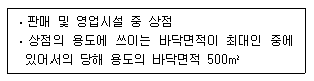
- 1.5 m
- 2.0 m
- 2.5 m
- 3.0 m
(정답률: 37%)
90. 건축허가 대상 건축물이라 하더라도 신고를 함으로써 건축허가를 받은 것으로 보는 경우에 해당하지 않는 것은?
- 바닥면적의 합계가 85제곱미터 이내의 증축
- 연면적 300제곱미터 미만이고 5층 미만인 건축물의 대수선
- 연면적의 합계가 100제곱미터 이하인 건축물의 건축
- 바닥면적의 합계가 85제곱미터 이내의 재축
(정답률: 45%)
91. 다음 중 국토의 계획 및 이용에 관한 법률에 따른 광역시설에 속하지 않는 것은? (단, 2 이상의 특별시 ㆍ 광역시 ㆍ 시 또는 군이 공동으로 이용하는 시설)
- 하수도(하수종말처리시설 제외)
- 운동장
- 납골시설
- 수질오염방지시설
(정답률: 40%)
92. 하나의 대지에 일반주거지역 400m2, 일반상업지역 300m2, 준주거지역 350m2가 걸쳐 있을 경우, 이 대지는 어떠한 용도지역에 관한 규정이 적용되는가?
- 일반주거지역, 일반상업지역, 준주거지역
- 일반주거지역, 준주거지역
- 준주거지역, 일반상업지역
- 일반주거지역, 일반상업지역
(정답률: 50%)
93. 다음은 비상승용기를 설치하지 아니할 수 있는 건축물에 관한 기준 내용이다. ( )안에 알맞은 것은?
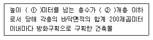
- ① 31, ② 4
- ① 31, ② 3
- ① 41, ② 4
- ① 41, ② 3
(정답률: 50%)
94. 다음 중 비상용승강기 승강장의 구조에 관한 기준 내용으로 옳지 않은 것은?
- 승강장은 각 층의 내부와 연결될 수 있도록 하되, 그 출입구 승강로의 출입구를 제외한다)에는 갑종방화문을 설치할 것
- 벽 및 반자가 실내에 접하는 부분의 마감재료는 불연재료로 할 것
- 옥내 승강장의 바닥면적은 비상용 승강기 1대에 대하여 5m2 이상으로 할 것
- 피난층이 있는 승강장의 출입구로부터 도로 또는 공지에 이르는 거리가 30m 이하일 것
(정답률: 66%)
95. 가구수가 16가구인 주거용 건축물에서 음용수 급수관 지름의 최소 기준은?
- 50mm
- 40mm
- 30mm
- 20mm
(정답률: 44%)
96. 문화 및 집회시설 중 공연장의 개별관람석 바닥면적이 1,500m2일 경우 개별관람석 출구는 최소 몇개소 이상 설치하여야 하는가? (단, 각 출구의 유효너비를 2m로 하는 경우)
- 6개소
- 5개소
- 4개소
- 3개소
(정답률: 50%)
97. 부설주차장이 주차대수 300대의 규모 이하인 때에는 시설물의 부지인근에 단독 또는 공동으로 부설주차장을 설치할수 있다. 이 경우 부지인근의 범위에 관한 다음 기준 내용 중 ( ) 안에 알맞은 것은?
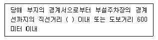
- 200 미터
- 300 미터
- 400 미터
- 500 미터
(정답률: 65%)
98. 국토의 계획 및 이용에 관한 법률에 따른 기반시설 중 자동차 정류장의 구분에 속하지 않는 것은?
- 여객자동차터미널
- 고속터미널
- 화물터미널
- 공영차고지
(정답률: 57%)
99. 다음의 노외주차장의 구조 및 설비기준에 관한 내용 중 ( ) 안에 알맞은 것은?
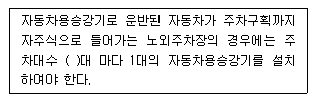
- 10대
- 20대
- 30대
- 40대
(정답률: 49%)
100. 다음 중 내화구조에 속하지 않는 것은?
- 철근콘크리트조 기둥의 경우 그 작은 지름이 20cm인 것
- 철근콘크리트조 바닥의 경우 두께가 10cm인 것
- 철근콘크리트조로 된 보
- 철근콘크리트조로 된 지붕
(정답률: 39%)